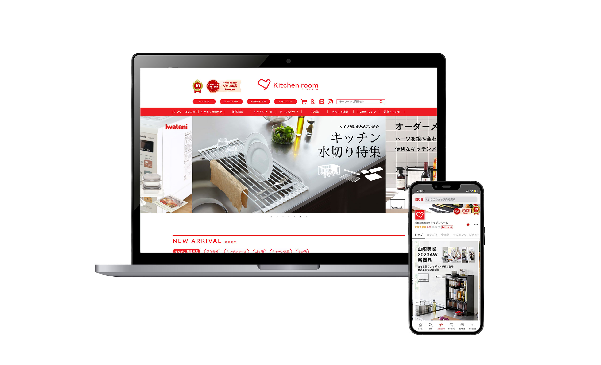
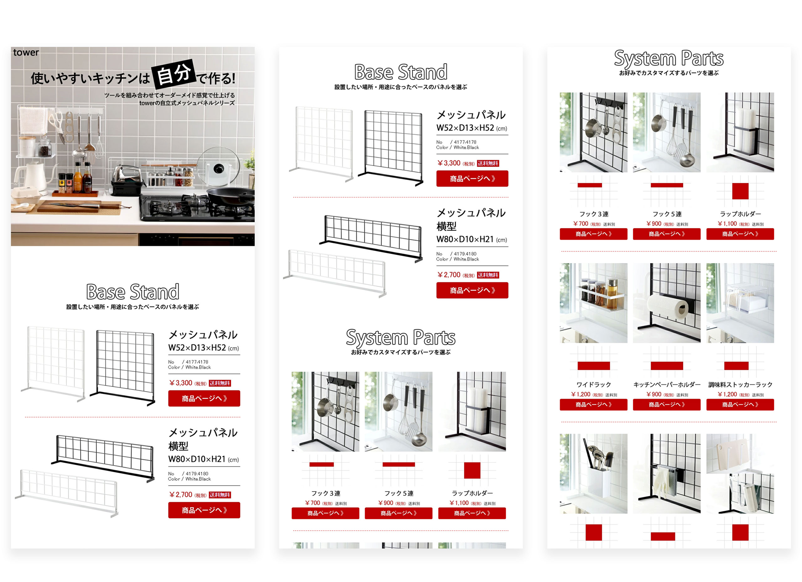
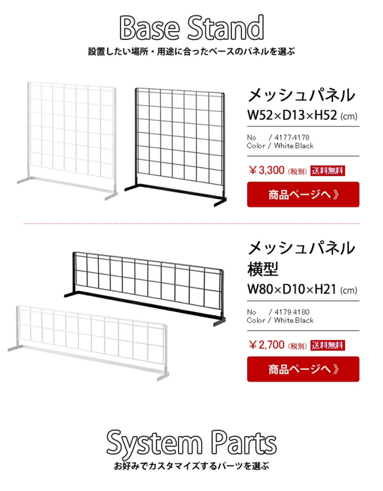
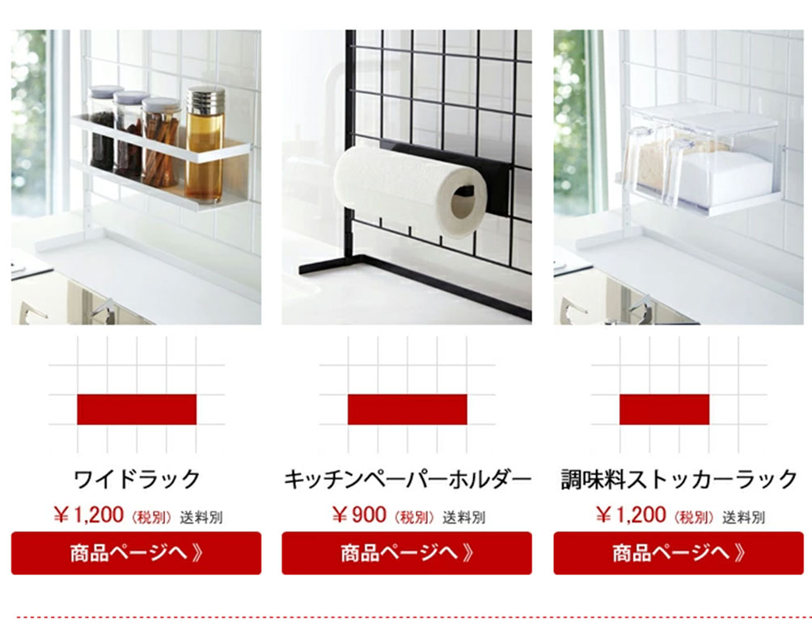
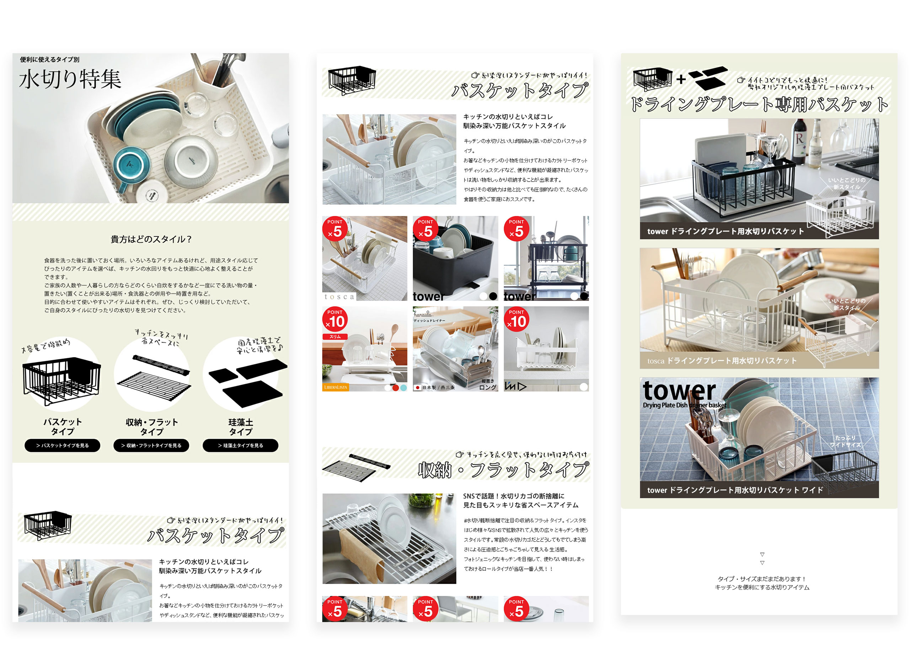
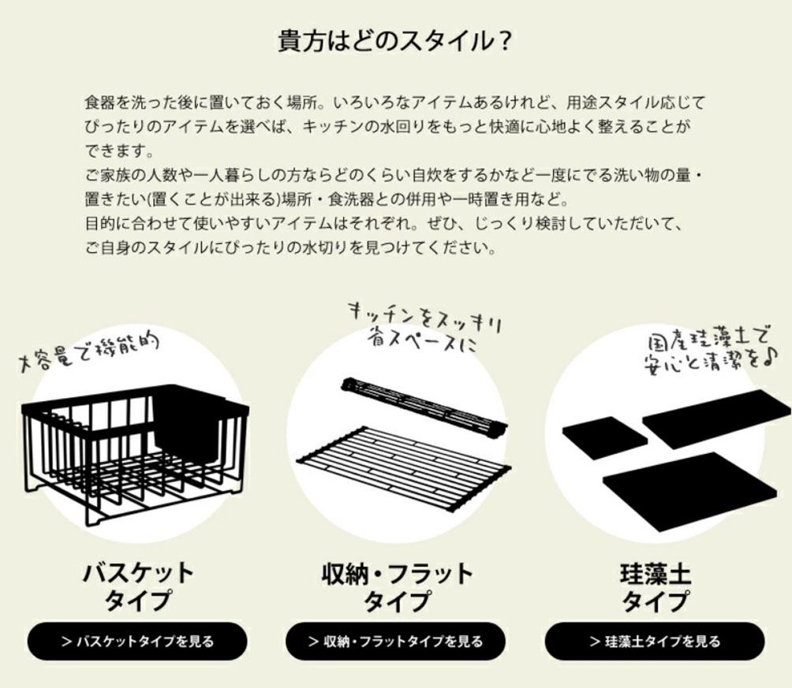
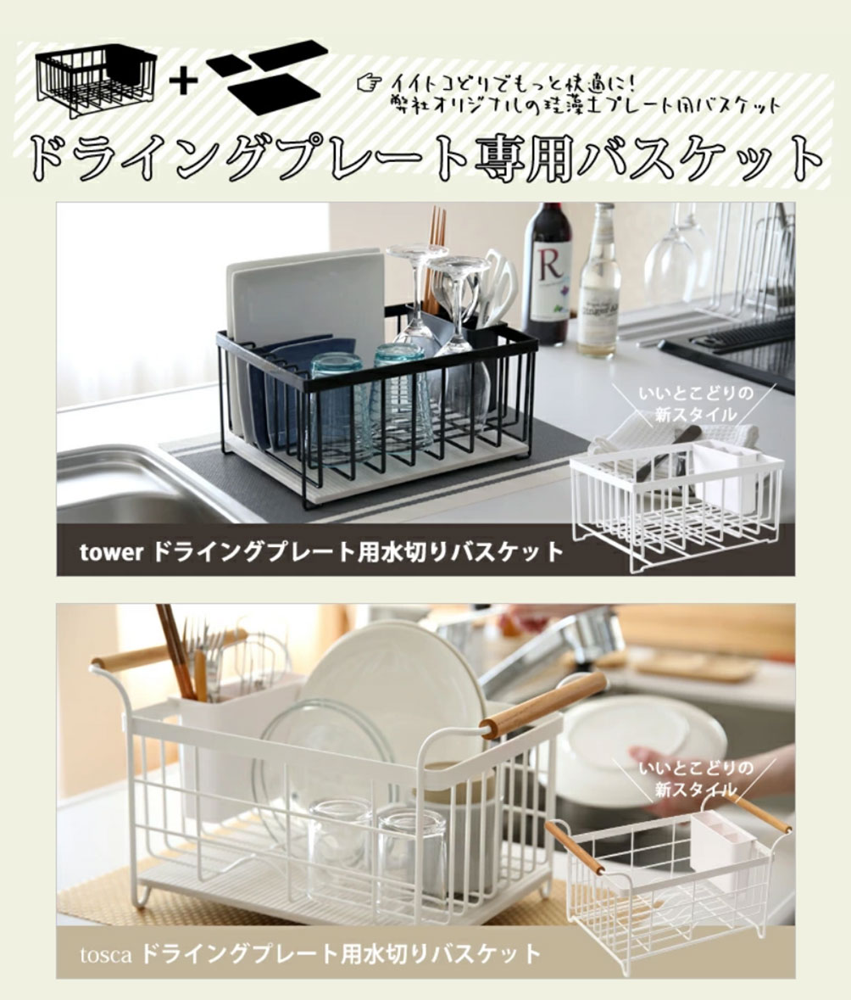

楽天に出店している自社店舗kitchenroomに掲載中の特集ページの制作を担当いたしました。
「 水切り特集 」「 オーダーメイド感覚で作る 」という2つの特集をデザインし、店舗のトップページに掲載させて頂いています。
実店舗でウィンドウショッピングをしているときのような楽しさを感じて頂けるようなページを目指しています。
特集ページのデザイン
担当した箇所
LPデザイン/バナーデザイン
制作期間
商品の選定/2日
デザイン/1特集ページにつき3日～5日ほど
ターゲット
日常的に料理をする30～50代の女性
目的
・たくさんの商品を見て購買意欲を上げてもらうこと。
・同系統の商品を店舗内で比較検討してもらい、合った商品を選んでもらうこと。
・キッチン雑貨を多く取り扱っているショップであることを認知してもらうこと。
URL
『 オーダーメイド感覚で作る！ 』

山崎実業towerシリーズより発売されている「自立式メッシュパネルシリーズ
」の特集ページでは、自分でカスタムパーツを選んでキッチンの収納を選べる“オーダーメイド感”が売りの商品です。
パーツそれぞれの画像を一覧できるようにし、カタログのように選びやすいデザインにしました。
工夫した箇所
01

メッシュスタンドにアイテムを配置していく、というイメージがしやすいよう、まず土台となるメッシュスタンドを二種類紹介し、その下にパーツの紹介を配置しました。
02

格子状の図解を挿入し、ツールの取り付けに必要な面積を分かりやすく表示。
その下に商品ページへのボタンを付けることで、購入への導線をスムーズに分かりやすく示しました。
『 水切り特集 』

当社では各メーカーから発売されている様々な水切りを取り扱っているので、お客様がどの水切りを買ったらいいか検討しやすいようタイプ別に分けて紹介しました。
工夫した箇所
01

主婦の方々に楽しく比較・検討してもらえるよう雑誌風のデザインに。手書きフォントを使って親しみやすさを出しました。
02

全3タイプの良さを知ってもらったあとに、推しである当社オリジナル商品の紹介を置くことで興味を引く構造にしました。